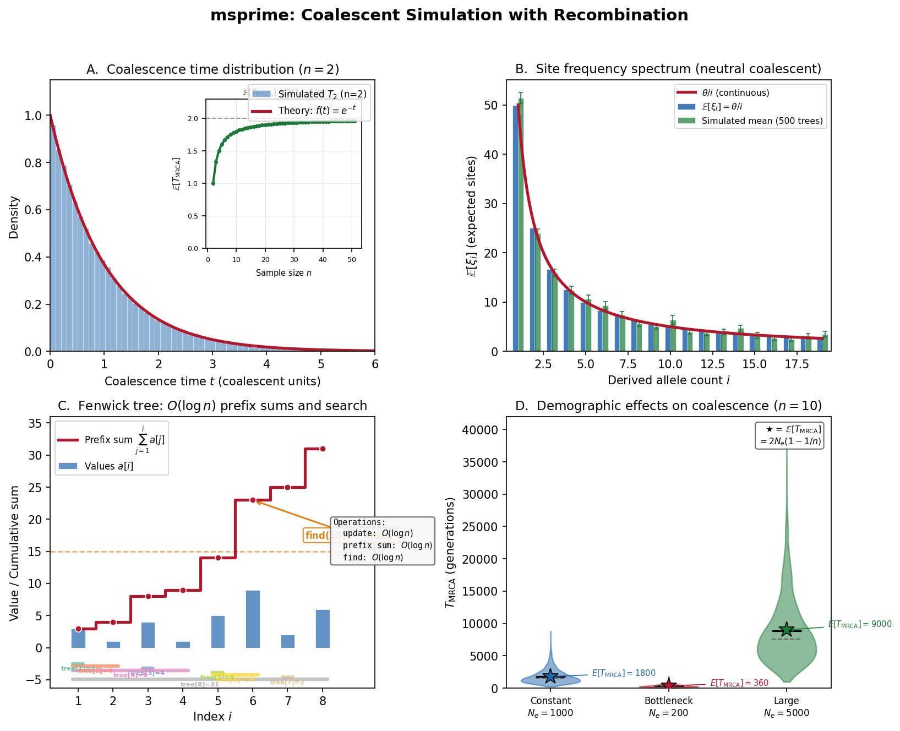

Overview of msprime
Before assembling the watch, lay out every part and understand what it does.
{kind=link}

msprime at a glance. Panel A: Coalescence times – histogram of simulated \(T_{\text{MRCA}}\) for \(n=2\) vs the theoretical \(\text{Exp}(1)\) density. Panel B: Site frequency spectrum from many coalescent replicates vs the classic neutral expectation \(\theta/i\). Panel C: Fenwick tree – the binary-indexed data structure enabling \(O(\log n)\) cumulative-sum queries and weighted random search. Panel D: Demographic effects on coalescence times under constant, bottleneck, and growth scenarios.
Welcome to the master clockmaker’s bench. Of all the timepieces we will examine in this book, msprime is arguably the most finely engineered: a coalescent simulator that can generate the complete genealogical history of millions of genomes in seconds. In the chapters ahead, we will disassemble this mechanism gear by gear, understand every spring and escapement, and reassemble it from scratch.
But first, we need the blueprint.
Note
Prerequisites. This chapter assumes you have read the earlier chapters on Coalescent Theory (which introduces the mathematical foundation of the coalescent) and Ancestral Recombination Graphs (which explains the Ancestral Recombination Graph). If those concepts are fresh in your mind, everything here will click into place. If not, a quick review of those chapters will pay dividends.
What Does msprime Do?
msprime takes a model specification and produces a random genealogy consistent with that model. The model specifies:
How many genomes to sample (\(n\))
How long the genome is (\(L\) base pairs)
How often mutations arise (\(\mu\) per bp per generation)
How often recombination occurs (\(r\) per bp per generation)
How population size has changed through time (demography)
The output is a tree sequence: a compact representation of the genealogical relationships among the sampled genomes at every position along the chromosome.
Each marginal tree \(\Psi_k\) covers a contiguous genomic interval and describes the ancestral relationships of all \(n\) samples within that interval. Adjacent trees differ by exactly one Subtree Prune and Regraft (SPR) operation, which corresponds to a recombination event.
Think of the tree sequence as a long filmstrip: each frame is a genealogical tree, and as you advance along the chromosome, the tree changes smoothly – one branch detaches and reattaches elsewhere. The entire filmstrip is the output of the master clockmaker’s bench.
From a tree sequence, you can compute:
Pairwise genetic diversity – how different are two genomes?
Allele frequency spectra – the distribution of variant frequencies
Linkage disequilibrium – correlations between nearby sites
Population divergence – how long ago populations split
Selection signatures – deviations from neutral expectations
Why Simulate Backwards?
A natural first instinct is to simulate evolution forwards: start with an ancestral population and evolve it generation by generation, tracking mutations, recombinations, and drift.
This works, but it’s enormously wasteful. In a population of \(N = 10{,}000\) diploid individuals, a forward simulation must track \(20{,}000\) genomes every generation – but we only care about the \(n = 100\) we sampled. The other 19,900 are irrelevant noise.
The coalescent flips the arrow of time. Instead of evolving a whole population forward, we start with the \(n\) sampled genomes and trace their ancestry backwards. We only track lineages that are ancestral to our sample – and there are at most \(n\) of them at any time, shrinking to 1 as they coalesce.
Forward (wasteful): Backward (efficient):
Gen 0: o o o o o o o o Present: * * * * (4 samples)
|\ |/| |\ |/| | | | | | |
Gen 1: o o o o o o o o Past: * * | | (3 lineages)
| |\ |/| | |\ |/ |\ |/ |
Gen 2: o o o o o o o o Deeper: * * | (2 lineages)
... |\ |/
Gen T: o o o o o o o o MRCA: * (1 lineage)
Tracks 8 genomes x T gens Tracks <=4 lineages
The efficiency gain is dramatic: the coalescent simulation runs in time proportional to \(n\) (the sample size), essentially independent of \(N\) (the population size). Population size enters only through a time scaling factor.
Probability Aside – Why “essentially independent of N”?
In the continuous-time coalescent (derived in Coalescent Theory), time is measured in units of \(N\) generations. The entire dynamics – waiting times, event probabilities, tree shapes – depend only on the sample size \(n\), not on the population size \(N\). The population size merely rescales the time axis. This is why you can simulate the ancestry of 1,000 genomes from a population of 10 billion just as fast as from a population of 10,000: the coalescent tree has the same shape in both cases; only the branch lengths (in generations) differ.
Now that we understand why backward simulation is efficient, let us see how msprime organizes the simulation into two clean phases.
The Two Phases of Simulation
msprime separates the simulation into two independent phases:
Phase 1: Ancestry simulation (this Timepiece’s main focus)
Generate the genealogical history – the tree sequence of marginal trees, with coalescence times and recombination breakpoints – but no mutations. This is a purely topological and temporal structure.
Phase 2: Mutation simulation
Given the tree sequence from Phase 1, scatter mutations along branches according to a Poisson process with rate \(\mu\). This is a simple post-processing step.
# The two phases in msprime's API
import msprime
# Phase 1: generate the genealogy (no mutations yet)
# sim_ancestry builds the tree sequence -- the "skeleton" of the watch.
ts = msprime.sim_ancestry(
samples=100, # number of haploid genomes to sample
sequence_length=1_000_000, # genome length in base pairs
recombination_rate=1e-8, # crossover probability per bp per generation
population_size=10_000, # effective population size (constant here)
)
# ts has trees, edges, nodes -- but no mutations
# Phase 2: add mutations to the genealogy
# sim_mutations "paints" heritable changes onto the branches.
mts = msprime.sim_mutations(ts, rate=1.5e-8)
# mts now has mutations placed on branches
Why separate them? Because the genealogy is independent of the mutation process. The same tree sequence can be used with different mutation rates, mutation models (infinite sites, finite sites, nucleotide models), or even no mutations at all. This separation is both computationally efficient and conceptually clean.
Probability Aside – Independence of genealogy and mutation
The separation of Phases 1 and 2 rests on a deep probabilistic fact: under the neutral coalescent, the genealogical tree is independent of the mutation process. Mutations are a Poisson decoration on the tree’s branches; they do not influence which lineages coalesce or when. This means you can generate one genealogy and overlay it with many different mutation realizations – a technique widely used in Approximate Bayesian Computation (ABC) workflows.
In the language of the watchmaker: Phase 1 builds the movement (the mechanical heart of the watch), and Phase 2 paints the dial (the visible face). The movement tells time; the dial makes it readable.
With the two-phase architecture clear, let us establish the vocabulary we will use throughout this Timepiece.
Terminology
Before diving into the gears, let’s nail down the terminology precisely.
Term |
Definition |
|---|---|
Lineage |
A single haploid genome being traced backwards in time. At the start, there are \(n\) lineages (one per sample). |
Segment |
A contiguous stretch of genome carried by a lineage. A lineage may carry multiple non-contiguous segments (due to recombination). |
Coalescence |
The event where two lineages share a common ancestor. Their ancestral material merges into one lineage going further back. |
Recombination |
The event where a lineage splits into two: one inherits the left part of the genome, the other inherits the right part. |
Marginal tree |
The genealogical tree at a single genomic position. |
Tree sequence |
The complete set of marginal trees along the genome, stored as a sequence of edges in tskit format. |
MRCA |
Most Recent Common Ancestor: the point where all sample lineages have coalesced at a given position. |
Effective population size \(N_e\) |
The idealized population size that produces the same rate of genetic drift as the real population. |
Coalescent units |
Time measured in units of \(2N_e\) generations (for haploids) or \(4N_e\) generations (for diploids). In these units, the rate of coalescence between two lineages is 1. |
Rate map |
A function mapping genomic position to local recombination or mutation rate, allowing for hotspots and coldspots. |
Closing a confusion gap – Segments vs. Lineages
These two terms are often conflated, but they are distinct. A lineage
is a conceptual entity: a genome being traced backward. A segment is
a concrete data object: a contiguous interval [left, right) of
ancestral material. A single lineage may own many segments, linked
together in a chain. When we say “a lineage splits at recombination,”
we mean its segment chain is divided into two chains, each becoming a new
lineage. When we say “two lineages coalesce,” we mean their segment
chains are merged, position by position, into one. Understanding this
distinction is essential for Segments & the Fenwick Tree, where we build
the segment data structure in detail.
The Coalescent in One Paragraph
Take \(n\) lineages at the present. Going backwards in time, any pair can coalesce (share a common ancestor). With \(k\) lineages, the waiting time to the next coalescence is \(\text{Exponential}(\binom{k}{2})\) in coalescent units. When a coalescence happens, a random pair merges into one lineage: \(k \to k-1\). Repeat until \(k = 1\).
With recombination, lineages can also split: a single lineage becomes two lineages, each carrying part of the genome. This means the number of lineages can increase as well as decrease, and different genomic positions reach their MRCA at different times.
The interplay between coalescence (merging) and recombination (splitting) creates the Ancestral Recombination Graph – and simulating this interplay efficiently is what msprime does.
If you have read the Ancestral Recombination Graphs chapter, you will recognize the ARG as the structure that the tree sequence encodes. The next chapter, The Coalescent Process, derives the mathematics of this interplay rigorously.
Parameters
msprime’s ancestry simulation takes the following parameters:
Parameter |
Symbol |
Meaning |
|---|---|---|
Sample size |
\(n\) |
Number of haploid genomes to sample |
Sequence length |
\(L\) |
Total genome length in base pairs |
Recombination rate |
\(r\) |
Crossover probability per bp per generation |
Population size |
\(N_e\) |
Effective population size (can vary through time) |
Mutation rate |
\(\mu\) |
Mutations per bp per generation (used in Phase 2) |
Gene conversion rate |
\(g\) |
Gene conversion initiation rate per bp per generation |
Gene conversion length |
\(\bar{\ell}\) |
Mean tract length for gene conversion events |
Migration matrix |
\(M\) |
Rates of migration between populations |
The Computational Challenge
Why can’t we just “run the coalescent” naively? Let’s count the operations.
A genome of length \(L = 10^8\) bp with recombination rate \(r = 10^{-8}\) per bp per generation has a total recombination rate of \(\rho = 4N_e r L\). For \(N_e = 10^4\), that’s \(\rho = 4 \times 10^4 \times 10^{-8} \times 10^8 = 4 \times 10^4\) recombination events expected in the ancestry of even 2 lineages.
For \(n = 1000\) samples, the simulation must handle millions of recombination and coalescence events. Each event modifies the set of lineages and their genomic segments. The key question is: how do we track all this efficiently?
The answer involves three ideas:
Segments as linked lists – each lineage’s ancestry is stored as a chain of segments. Think of this as the linked-list track that follows each lineage’s ancestral material along the genome. Segments can be split and merged in \(O(1)\) time by rewiring pointers rather than copying arrays.
Fenwick trees for rate computation – the total recombination rate depends on the total genomic material across all lineages, which a Fenwick tree maintains in \(O(\log n)\) time. The Fenwick tree is a clever indexing mechanism for fast event scheduling: it lets the simulator ask “which segment should the next recombination hit?” and get an answer in logarithmic time.
Event-driven simulation – instead of stepping through time uniformly, we jump directly to the next event (whichever of recombination, coalescence, or migration happens first).
Closing a confusion gap – What is event-driven simulation?
Many people imagine simulations as ticking through time in fixed steps (e.g., one generation at a time). Event-driven simulation is different: it asks, “When does the next thing happen?” and jumps directly to that moment. Between events, nothing changes, so there is no need to simulate the intervening silence. In msprime, each possible event (coalescence, recombination, migration) proposes a random waiting time drawn from an exponential distribution. The simulator picks the smallest waiting time, advances the clock to that moment, and executes only that event. This approach is sometimes called the Gillespie algorithm or the Stochastic Simulation Algorithm (SSA), and it is the standard engine for continuous-time Markov chain simulation. We will build it explicitly in Hudson’s Algorithm.
These three ideas, combined, give msprime its remarkable efficiency: it can simulate the ancestry of millions of samples across whole chromosomes in seconds.
Ready to Build
You now have the high-level blueprint – the exploded diagram of the master clockmaker’s bench, with every part labeled. In the following chapters, we will build each gear from scratch:
The Coalescent Process – The mathematical engine: how lineages race to find common ancestors, and the exponential distributions that govern the timing.
Segments & the Fenwick Tree – The data structures: the linked-list track that follows each lineage’s ancestral material, and the Fenwick tree – a clever indexing mechanism for fast event scheduling.
Hudson’s Algorithm – The main simulation loop – the ticking of the clock, where the exponential race drives the event-driven core.
Demographics & Population – Population structure and size changes: how the case and dial of the watch shape the genealogy.
Mutations – Painting mutations on the tree: the final visible layer of genetic variation.
Each chapter derives the math, explains the intuition, implements the code, and verifies it works.
Let’s start with the most fundamental gear: the coalescent process itself.